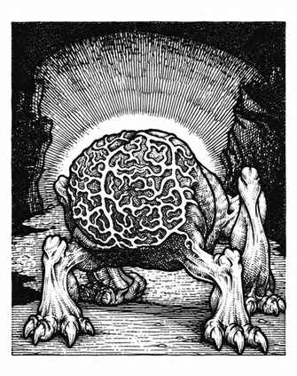

噬脑怪 · Intellect Devourer
 |
|
噬脑怪是最令人恐惧的怪物之一，栖息在地底深处或荒野黑暗阴森的巢穴中。它们能用巨爪攻击，但主要依靠灵能捕食；猎物的心灵能量不论来自临死前的尖叫，还是更隐秘的途径，都会成为噬脑怪的食粮。若 6 寸范围内有人以天赋或魔法使用灵能，噬脑怪就会跟踪此人，伺机单独突袭。
噬脑怪随后扑向受害者，以利爪撕扯，同时用“自我鞭笞”或“自我暗示”发动灵能攻击。灵能攻击成功后，噬脑怪便进入受害者失去心智的躯体，伪装成被杀者欺骗其他生物，随后伺机攻击并吞食更多猎物。
噬脑怪能像 10 级盗贼一样藏身阴影。普通武器与大多数法术对它们无效；命中时，附魔加值 +3 或更高的魔法武器仅造成 1 点伤害。强光会将它们驱离，“防护邪恶”会使它们无法靠近。“火球术”只起到强光效果；“闪电箭”会令其疼痛，并按闪电箭的伤害骰数每骰造成 1 点伤害。“死亡术”有 25% 概率成功，“律令：死亡”则能杀死它们。噬脑怪当然可以受到灵能攻击；其总灵能强度为 200，虽高但仍有可能被击败。若受到严重威胁，它们会逃跑自保。
噬脑怪的感知能力也延伸至星界与灵界，并常在这两个位面游荡。它们能说任何人类语言。